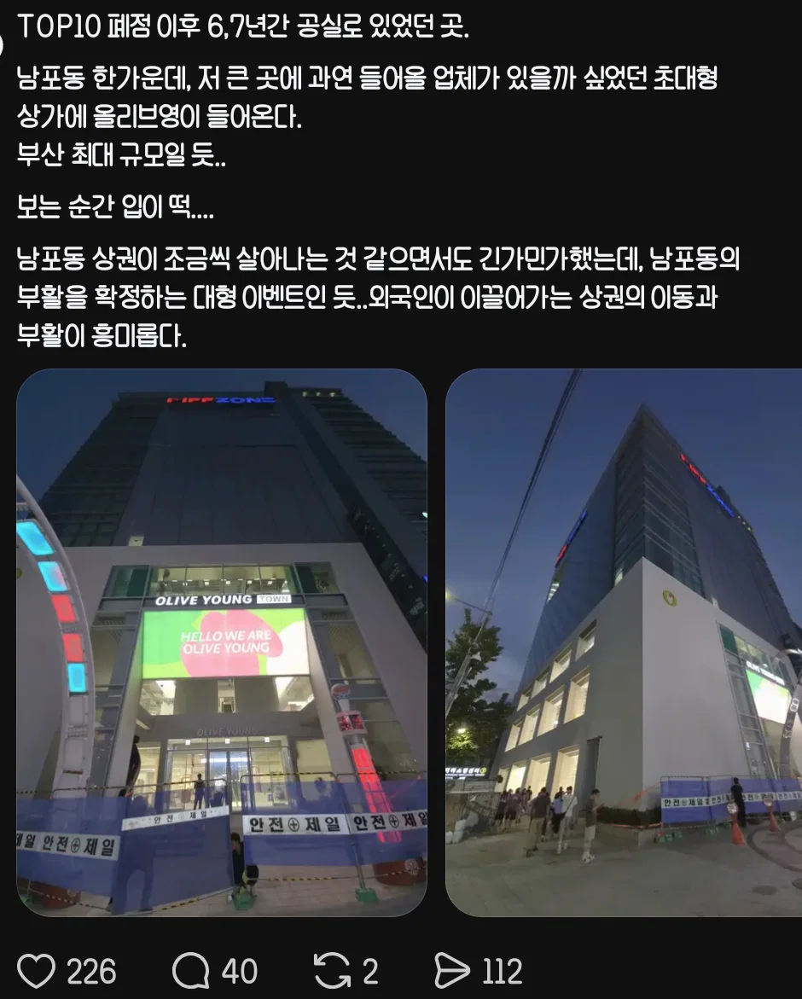
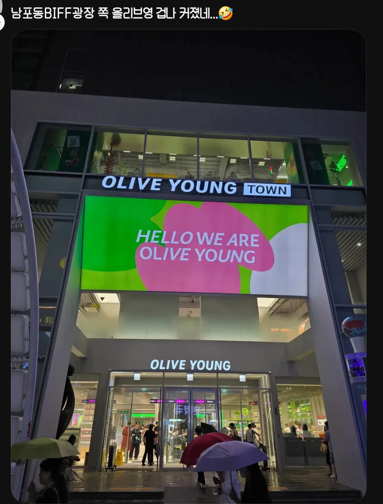
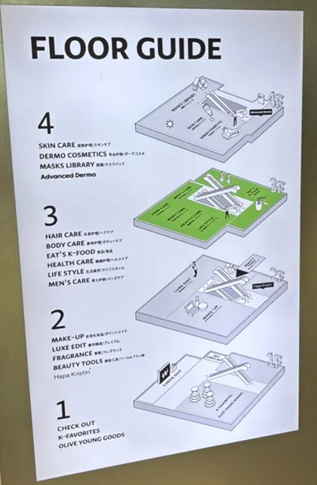

옛 부영극장자리
4층 900평 규모로 오픈
전국에서 명동 센트럴 타운 (950평) 다음으로 큰 매장
현재 부산 공실률은 증가중인데
외국인 관광객 몰리는 남포동 서면은 공실률 떨어지는중



옛 부영극장자리
4층 900평 규모로 오픈
전국에서 명동 센트럴 타운 (950평) 다음으로 큰 매장
현재 부산 공실률은 증가중인데
외국인 관광객 몰리는 남포동 서면은 공실률 떨어지는중
영도에서 밥먹고 남포동으로 지나가는데 관광버스도 엄청 돌아다니고 길에 행인들도 외국인이 더 많은 느낌이더라
거의 다이소급으로 미친듯이 돈 빨아들일듯 ㅋㅋㅋ
다이소보다 훨씬 더 벌지 않음? 올영 성과급만 7-8천만원이랬는데
올영이 다이소보다 좀 더 벌긴 해
남포동 오랜만에가보니 진짜 외국인이 반이상이던데
남포동 외국인 진짜 많음 ㅋㅋㅋㅋㅋ
예전에 옷가게 있었던거 갘은데 저기가 장사하기 존내 쉽지않음
그립다 2000년대 초반 대영시네마서 영화보고
나와서 남포동 돌아다니면 너무나 활기찼는데..
이제는 남포동에는 사람없고 국제시장쪽 족발골목으로
2-30대 다 모이더라
확실히 이젠 외국인을 노려야 되는것 같음
한번도 안가봣는데 아웃풋이랑 15언더 호황일듯
민들레영토 있던 거기같네
그립구먼
서면역에 캐리어끌고다니는 외국인 진짜 많아졌더라
코로나 때 공실났던 건물들 지금 죄다 외국인 상대로 물건 파는가게들로 바뀌고 요식업도 갑자기 존나 늘어남 감자탕집 생겼는데 장사 존나 잘되더라
근데 진짜 외국인이 많아도 너어어어어무 많아짐
남포 진짜 부산역이랑 국제시장때문인가
외국인 조오오온나 많음 ㄷㄷ
광안리 가도 엄청많고
원래 많긴했다만
남포동은 모르겠는데 홍대 올영 가봐라 진짜 외국 애들 넘쳐 남
음 옛날 대영시네마 앞 맥날 옆 건물에 이미 올영 큰거있지않았나
저기 사람들 쥰나 많아....한국 아닌거같아 ㄹㅇ
부산이 해수부도 옮긴지역은 상권도 살아나고 좋네
부산 마린시티 진짜 괜찮은데
외국인이 올리브영 다 쓸어가더만
올리브영~~ 블랙핑크 레블루션
롯데랑 gs 코로나때 좀 힘들다고 헬스뷰티샵 싹 접어버렸는데 지금 배가 얼마나 아플까
저기 올영 있었는데 하고 봤더니 1층만 있던거 위로 확장 했구나
서울 시내 여기저기 올영 문닫던데 정리중 아니었나... 하긴 여기저기 너무 많았음. 크게 몇군데 하는게 나을수도
남포동 가면 거리에 외국인들 캐리어 끌고 다니는게 사람들 1/3임
아니 근데 왤캐 많이 옴?
예전에 마구도나르도 있던데아님?